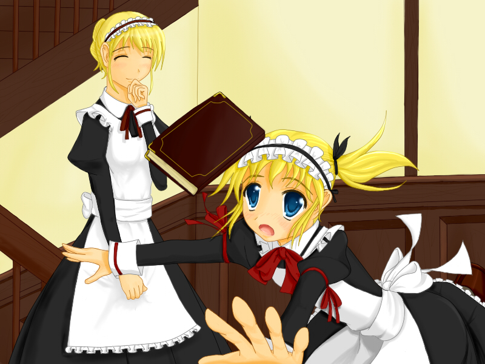

■リメイク メイドさん-ちゃん■

Creator
りんくん
Comment
リメイク前に比べて若干あおりを意識してます。
背景は地味に三点透視つかってます。キャラは右の娘の遠近感が増してるのではと・・・どうですか？
あと極力服が地味になるようデザインを考え直しました。
従者たるものあまり派手ではいけませんね。リメイク前はワンポイント欲しくてリボンに赤を配したりしたんですがそれも無くし、全体的に彩度が低くなるようにしたつもりです。それっぽくなってれば幸いです。
絵には関係ありませんが、ハンドルネームの表記をひらがなに変えました。
よろしくお願いします。
<<
Back
>>